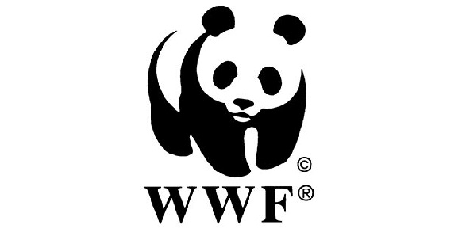
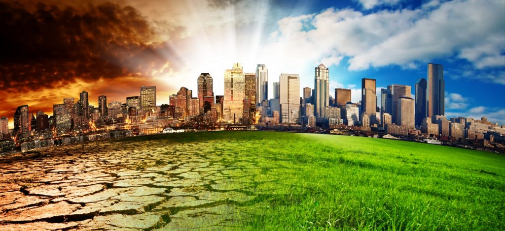
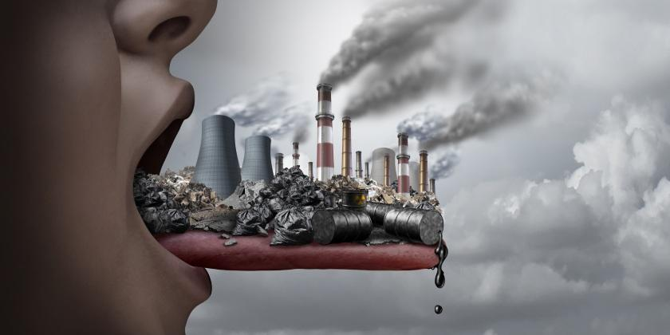
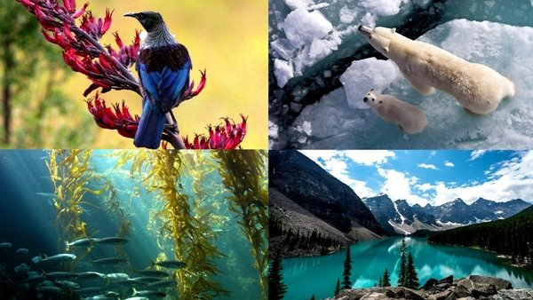
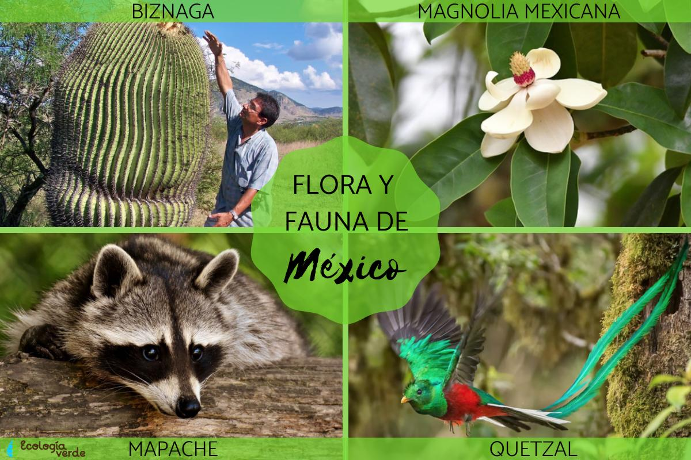
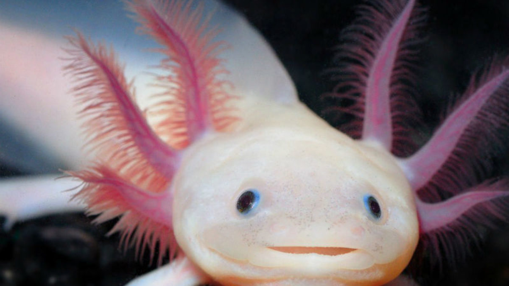

.jpg)
Desarrollo Sustentable
Greenpeace
.png)
El nombre de esta organización proviene del inglés, green: verde y peace: paz. Es una organización no gubernamental que fue fundada en Vancouver, Canadá, en 1971. Define su objetivo como la protección del medio ambiente y la paz mundial. Es una de las mayores organizaciones ambientalistas independientes del planeta; posee oficinas nacionales e internacionales en 55 países y 32 millones de afiliados que financian todas sus actividades, además de artistas e intelectuales que recaudan fondos como donaciones. Su sede se encuentra en Ámsterdam, Países Bajos.
(WWF)
El nombre de la organización se traduce al español como Fondo Mundial para la Vida Salvaje, pero se emplea el nombre Fondo Mundial para la Naturaleza. Fue fundada en 1961. Es la mayor organización no gubernamental ambientalista del planeta. Funciona en más de 100 países a través de unos 5 millones de voluntarios. Su sede se encuentra en Suiza. Sus objetivos de trabajo son la investigación, la conservación y la restauración ambiental, los cuales plantea a través de la conservación de la diversidad biológica del planeta, la promoción del uso sostenible de los recursos ambientales y de la disminución de la contaminación ambiental y el consumo voraz.
(PNUMA)
El Programa de las Naciones Unidas para el Medio Ambiente (PNUMA), es un órgano de desarrollo de políticas ambientalistas mundial, enmarcado en el sistema de la ONU, que ejerce funciones de educación para la promoción del desarrollo sostenible mundial. La labor del PNUMA, de reconocida y amplia trayectoria, consiste en la evaluación de las condiciones ambientales y de las proyecciones en sus tendencias, en los ámbitos regionales, nacionales y mundiales, la elaboración de instrumentos de trabajo y la promoción de acciones conservacionistas.
Cambio Climatico
El cambio climático es el mal de nuestro tiempo y sus consecuencias pueden ser devastadoras si no reducimos drásticamente la dependencia de los combustibles fósiles y las emisiones de gases de efecto invernadero. De hecho, los impactos del cambio climático ya son perceptibles y quedan puestos en evidencia por datos como: La temperatura media mundial ha aumentado ya 1,1°C desde la época preindustrial El período 2015-2019, según la Organización Meteorológica Mundial (OMM), será probablemente el quinquenio más cálido jamás registrado La tasa de subida del nivel del mar ha ascendido a 5 mm al año en el quinquenio 2014 -2019 Pero hoy también estamos viendo los impactos económicos y sociales, que serán cada vez más graves, como: • Daños en las cosechas y en la producción alimentaria • Las sequías • Los riesgos en la salud • Los fenómenos meteorológicos extremos, como danas, tormentas y huracanes • Mega-incendios En los peores escenarios probables que los expertos reflejan, el aumento de temperatura podría llegar a los 4,8 ºC para final de siglo. El cambio climático es un problema global que alcanza una perspectiva ambiental, política, económica y social en la que las peores previsiones también implican enormes pérdidas económicas. Y es que cuanto más tardemos en actuar, mucho más elevadas serán las inversiones para la adaptación al aumento de la temperatura. .
Contaminación
La contaminación ambiental o polución es la introducción de sustancias u otros elementos físicos en un medio, que provocan que este sea inseguro o no apto para su uso.1 El medio ambiente puede ser un ecosistema, un medio físico o un ser vivo. El contaminante puede ser una sustancia química o energía (como sonido, calor, luz o radiactividad). Es siempre una alteración negativa del estado natural del medio ambiente y, por lo general, se produce como consecuencia de la actividad humana considerándose una forma de impacto ambiental.
La contaminación puede clasificarse según el tipo de fuente de donde proviene, o por la forma de contaminante que emite o medio que contamina. Existen muchos agentes contaminantes, entre ellos las sustancias químicas (como plaguicidas, cianuro, herbicidas y otros), los residuos urbanos, el petróleo o las radiaciones ionizantes.
Pueden producir enfermedades, daños en los ecosistemas o el medio ambiente. Además existen muchos contaminantes gaseosos que juegan un papel importante en diferentes fenómenos atmosféricos, como la generación de lluvia ácida, el debilitamiento de la capa de ozono y el cambio climático.
El planeta Tierra es el único planeta conocido que tiene las condiciones adecuadas para que los organismos vivos crezcan, se reproduzcan y sobrevivan. Los factores bióticos y abióticos son los factores del ecosistema y tienen un papel importante en la formación del ecosistema. Los factores abióticos pueden definirse cuáles son los componentes físicos y químicos no vivos en el ecosistema. Mientras que los factores bióticos son los componentes vivos de un ecosistema. Tanto los factores bióticos como los abióticos influyen en la supervivencia y la reproducción. Ambos componentes están relacionados entre sí, si un componente o un factor es eliminado o cambiado, afectará a todo el ecosistema. Entre ambos factores, el Abiotico juega un papel vital ya que afecta directamente la supervivencia de los organismos. Factores Abióticos Dentro de la complejidad de los ecosistemas, los factores abióticos se denominan componentes no vivos (químicos y físicos). Afecta la capacidad del organismo para reproducirse y sobrevivir. Éstos se pueden adquirir de la atmósfera, hidrosfera y litósfera
Los factores bióticos y abióticos se distinguen en que los primeros tienen que ver con las formas de vida y sus relaciones, mientras que los segundos se relacionan con la disposición físicoquímica de los elementos no orgánicos de un hábitat determinado. Así, mientras que los animales y las plantas son factores bióticos, el pH del suelo, el clima y la composición del suelo son factores abióticos.
No obstante, ambos tipos de factores están fuertemente vinculados, ya que el estado de uno se refleja en el del otro. La composición química del suelo, por ejemplo, incide directamente en su fertilidad y por lo tanto en la capacidad de sostener vida vegetal, que sostendrá a su vez a consumidores y detritófagos; pero la existencia de estas formas de vida añadirá con el tiempo capas de materia orgánica al suelo, manteniéndolo fértil y rico en nutrientes que a su vez fijarán su composición química.
En conclusión, podemos afirmar que los bióticos y los abióticos son fundamentales para el desarrollo de las especies y su hábitat: no es posible concebir la existencia de uno sin el otro.
Dentro de la biodiversidad que caracteriza a un ecosistema o región concreta del planeta, la flora y fauna de esta juegan un papel muy importante. Mientras que la flora hace referencia al conjunto de especies vegetales del ecosistema o región, la fauna se refiere al conjunto de animales del ecosistema o región, tanto vertebrados como invertebrados.
Así, la flora y la fauna constituyen indicadores ecológicos muy importantes a la hora de caracterizar y conocer los ecosistemas, pues están condicionados por las características climáticas de la zona y por la evolución de especies que se ha ido dando a lo largo de la historia en cada zona del planeta.
1._ flora
Yoloxochitl (Magnolia mexicana)
Biznaga (Mammillaria spp.)
Maíz (Zea mays)
Más flora de México
Cactus candelabro (Stenocereus spp.).
Flor de látigo (Aporocactus spp.).
Cactus del hombre viejo (Cephalocereus spp.).
Encino blanco (Quercus arizonica).
Enebro común (Juniperus communis).
Guayaba (familia Myrtaceae).
Ombligo de Venus (Umbilicus rupestris).
Oyamel de Juárez (Abies hickelii).
Pino de Jalisco (Pinus jaliscana).
Pino piñonero llorón (Pinus pinceana).
Palma de Guadalupe (Brahea edulis).
Siemprevivas (Echeverria spp.).
Soyate de Tehuantepec (Beaucarnea stricta).
2._ fauna
Mariposa monarca
Quetzal
Tapir
Más fauna de México
Águila real (Aquila chrysaetos).
Cangrejo de las barrancas (Pseudothelphusa dugesi).
Tarántula del Distrito Federal (Hemirrhagus chilango).
Charal de Alchichica (Poblana Alchichica).
Sardinilla yucateca (Fundulus persimilis).
Cecilia oaxagueña (Dermophis oaxacae).
Rana de la Sierra Madre Occidental (Lithobates sierramadrensis).
Salamadra de la Sierra de Juárez (Cryptotriton adelos).
Sapo de cresta grande (Bufo cristatus).
Chara enana (Cyanolyca nana).
Tecolote tamaulipeco (Glaucidium sanchezi).
Trogón orejón (Euptilotis neoxenus).
Gorrión serrano (Xenospiza baileyi).
Iguana espinosa mexicana (Ctenosaura pectinata).
Nauyaca de montaña (Cerophidion barbouri).
Coralillo del Balsas (Micrurus laticollaris).
Tortuga de cuatro ciénegas (Terrapene coahuila).
Cascabel pigmea mexicana (Crotalus ravus).
Mapache de Cozumel (Procyon pigmaeus).
Murciélago platanero (Musonycteris harrisoni).
Vaquita marina (Phocoena sinus).
Zorrillo pigmeo (Spilogale pymaea).
Ajolote mexicano.
Amazona o loro de cabeza amarilla.
Carpintero imperial o cuauhtotomomi.
Conejo matorralero de la Isla San José.
Coqueta de Guerrero.
Conejito de los volcanes o teporingo.
Guacamayo rojo.
Jaguar.
Lobo gris mexicano.
Manatí de las Antillas.
Mascarita transvolcánica.
Mapache pigmeo o de Cozumel.
Musaraña de los Tuxtlas.
Ocelote.
Oso negro.
Pardela de Townsend.
Picote tequila.
Rana fisgona mayor.
Quetzal.
Tapir centroamericano.
Tortuga boba o caguama.
Tortuga del bolsón o tortuga mexicana.
Tuza de Xuchil o lanuda.
Vaquita marina.
Consecuencias

Factores bioticos y abioticos

Ejemplos
Flora y fauna en mexico

Ejemplos
Peligro de extincion
